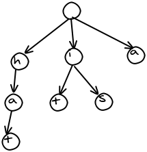
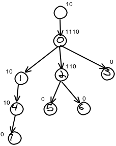

Hate UML?Draw sequence diagrams in seconds.http://www.websequencediagrams.com |
Succinct Data Structures: Cramming 80,000 words into a Javascript file.
Let's continue our short tour of data structures for storing words. Today, we will over-optimize John Resig's Word Game. Along the way, we shall learn about a little-known branch of computer science, called succinct data structures.
John wants to load a large dictionary of words into a web application, so his Javascript program can quickly check if a word is in the dictionary. He could transfer the words as long string, separated by spaces. This doesn't take much space once it is gzip-compressed by the web server. However, we also have to consider the amount of memory used in the browser itself. In a mobile application, memory is at a premium. If the user switches tabs, everything not being used is swapped out to flash memory. This results in long pauses when switching back.
One of the best data structures for searching a dictionary is a trie. The speed of search does not depend on the number of words in the dictionary. It depends only on the number of letters in the word. For example, here is a trie containing the words "hat", "it", "is", and "a". The trie seems to compress the data, since words sharing the same beginnings only show up once.

We need to solve two problems. If we transmit the word list to the web browser, it then has to build the trie structure. This takes up a lot of time and memory. To save time, we could pre-encode the trie on the server in JSON format, which is parsed very quickly by the web browser. However, JSON is not a compact format, so some bandwidth is wasted downloading the data to the browser. We could avoid the wasted bandwidth by compressing the trie using a more compact format. The data is then smaller, but the web browser still has to decompress it to use it. In any case, the browser needs to create the trie in memory.
This leads us to the the second major problem. Despite appearances, tries use a lot of memory to store all of those links between nodes.
Fortunately, there is a way to store these links in a tiny amount of space.
Succinct Data Structures
Succinct data structures were introduced in Guy Jacobson's 1989 thesis, which you cannot read because it is not available anywhere. Fortunately, this important work has been referenced by many other papers since then.A succinct data structure encodes data very efficiently, so that it does not need to be decoded to be used. Everything is accessed in-place, by reading bits at various positions in the data. To achieve optimal encoding, we use bits instead of bytes. All of our structures are encoded as a series of 0's and 1's.
Two important functions for succinct structures are:
- rank(x) - returns the number of bits set to 1, up to and including position x
- select(y) - returns the position of the yth 1. This is the inverse of the rank function. For example, if select(8) = 10, then rank(10) = 8.
Corresponding functions exist to find the rank/select of 0's instead of 1's. The rank function can be implemented in O(1) time using a lookup table (called a "directory"), which summarizes the number of 1's in certain parts of the string. The select() function is implemented in O(logn) time by performing binary search on the rank() function. It is possible to implement select in constant time, but it is complicated and space-hungry.
| p | 0 | 1 | 2 | 3 | 4 | 5 | 6 | 7 |
|---|---|---|---|---|---|---|---|---|
| Bit | 1 | 1 | 0 | 0 | 0 | 0 | 0 | 1 |
| rank(p) | 1 | 2 | 2 | 2 | 2 | 2 | 2 | 3 |
| select(p) | 0 | 1 | 7 |
A Succinct Trie
Here's a trie containing the words "hat", "is", "it", and "a".First, we add a "super root". This is just an additional node above the root. It's there to make the math work out later.
We then process the nodes in level order -- that is, we go row by row and process the nodes left to right. We encode them to the bit string in that order.
In the picture below, I've labeled each node in level order for convenience. I've also placed the nodes encoding above it. The encoding is a "1" for each child, plus a 0. So a node with 5 children would be "111110" and a node with no children is "0".

Now, we encode the nodes one after another. In the example, the bits would be 10111010110010000. I've separated them out in this table so you can see what's going on, but only the middle row is actually stored.
| Position | 0 | 1 | 2 | 3 | 4 | 5 | 6 | 7 | 8 | 9 | 10 | 11 | 12 | 13 | 14 | 15 | 16 |
|---|---|---|---|---|---|---|---|---|---|---|---|---|---|---|---|---|---|
| Bit | 1 | 0 | 1 | 1 | 1 | 0 | 1 | 0 | 1 | 1 | 0 | 0 | 1 | 0 | 0 | 0 | 0 |
| Node | 0 | 1 | 2 | 3 | 4 | 5 | 6 | 7 | |||||||||
We then encode the data for each node after that. To get the data for a given node, just read it directly from that node's index in the data array.
hiaatst
Getting the data
The main thing that we want to do with a trie is follow links from each node to its children. Using our encoding, we can follow a link using a simple formula. If a node is numbered i, then the number of its first child is select0(i + 1) - i. The second child is the one after that, and so forth. To obtain the number of children, look up the first child of the i+1th node and subtract, since they are stored consecutively.
For example: We want the first child of node 2. The 3rd 0 is at position 7. Seven minus two is five. Therefore the first child is numbered 5. Similarly the first child of node 3 is found to be 7 by this formula (no, it doesn't really exist, but it works for the calculation). So node 2 has 7 minus 5 equals 2 children.
Demo
Here is a demonstration, hosted on my faster server. (Source code: Bits.js) (It doesn't work in RSS readers -- go to my blog to see it. Paste a list of words in the top text area (or click Load dictionary to load one). Click "Encode" to create the trie and encode it. This step can be very slow, because I did not optimize the encoding process. Once encoding is complete, you can use the Lookup button to check if words are in the dictionary.Using this encoding method, a 611K dictionary containing 80000 words is compressed to 216K, or 132K gzipped. The browser does not need to decode it to use it. The whole trie takes as much space as a 216K string.
Details
The directory contains the information needed to compute the rank and select functions quickly. The trie is the bitstring representing the trie and the connections between all of its nodes.To avoid problems with UTF encoding formats and escaped characters, the bit strings are encoded in BASE-64. All of the bit decoding functions are configured to operated on BASE64 encoded units, so that the input string does not need to be decoded before being used.
We only handle the letters "a" to "z" in lower case. That way, we can encode each letter in 5 bits.
You can decrease space usage and performance by increasing the L2 constant, and setting L1 = L2*L2. This controls the number of bits summarized in each section of the rank directory. L2 is the maximum number of bits that have to be scanned to implement rank(). More bits means fewer directory entries, but the select() and rank() functions will take longer to scan the range of bits.
Caveats
I described how to create an MA-FSA in a previous article. There is no known way to succinctly encode one. You must store one pointer for each edge. However, as the number of words increases, an MA-FSA (also known as a DAWG) may eventually become more compact than the trie. This is because a trie does not compress common word endings together.- The Curious Complexity of Being Turned On
- Usability Nightmare: Xfce Settings Manager
- Rules for Effective C++
- Email Etiquette
- Creating a Todo list in Ajax
Want more programming tech talk?
Follow on Google Buzz
 Subscribe to posts
Subscribe to posts
tba
One question:
"For example, if rank(10) = 8, then select(8) = 10"
Isn't this only true if the tenth bit is a 1? The converse appears to always be true.
Steve Hanov
Fredrik
But for this particular problem - cramming a bunch of words into JS - wouldn't a MA-FSA (also known as DAWG I suppose, commonly used to compress dictionaries) do an even better job at compressing the data? You wouldn't be able to use this particular representation though (which was the goal of the article I guess?)
Steve Hanov
A DAWG is not a planar graph, and succinctly encoding arbitrary graphs is possible but too difficult. Instead, we have to store a pointer with each edge to another node. Since the number of edges in a DAWG is much smaller than a Trie, there is some promise to using the less complicated DAWG structure. With the 80,000 words they are very close.
According to my earlier program, an MA-FSA (or DAWG) containing the same 80000 words contains 61231 edges. So each edge stores a 16-bit pointer to another node, plus 5 bits for the letter. This would result in 160732 bytes. With the 4/3 BASE-64 overhead, this string would take 214310 characters. This is less than the succinct trie. However, we are dangerously close to needing to use more bits for the pointers if more words are used.
Iain Beeston
But I think I've spotted a typo, where you've written "in the example, the bits would be 0111010110010000", shouldn't there be an extra "1" at the start? (ie. "in the example, the bits would be 10111010110010000")
David Gingrich
"In the example, the bits would be 0111010110010000."
should be:
"In the example, the bits would be 10111010110010000.
Mike Koss
github.com/mckoss/lookups/blob/master/scripts/ptrie.js
Marc Lepage
BlueRaja
PS. The thesis isn't online, but the paper he wrote with it is:
www.cs.cmu.edu/afs/cs.cmu.edu/project/aladdin/wwwlocal/compression/00063533.pdf
Steve Hanov
Zach
you use to generate your freehand looking drawings?
-z
Dan
Forgive what is perhaps an incredibly naive question, but how could this implementation be extended to include a wider range of characters?
I've ported it to another language for the purposes of storing and processing a large amount of street names and numbers. It works very well in general, but there are some cases were it falls over. In these cases spaces, apostrophes, and occasionally numbers, are used as part of the street name.
I have tried working with encoding width and extending the range of bits, but I suspect that either my alterations are incorrect, or my understanding of the encoding process is wrong.
Steve Hanov
The algorithm was written with characters from a-z in mind. To allow more characters, you only need to change the Trie.encode and FrozenTrie.getNodeByIndex functions. They represent a-z as number from 0..26 which fit into 6 bits.
(There is no need to touch the ORD and CHR functions. They are not related to the alphabet used).
tatumizer
Let's talk about the part where we encode the number of children of a node: 0 children as 0, 1 as 10, 2 as 110, ... 10 as 11111111110
Looks like a cute trick: numbers get encoded essentially in numeric system base 1, which is highly unusual. But how efficient it is from informational perspective?
I calculated frequencies for the trie -encoded scrabble dictionary: that is, how many nodes have exactly 0 children, how many nodes have 1 child, etc.
Turns out, this encoding is almost Huffman-perfect. There's always more nodes having N children than N+1, and (often) even than N+1, N+2, etc combined, which is exactly what required for the above encoding to be efficient. The only questionable part if 0 children vs 1 child, but it depends on how we treat terminators (that is, whether we add "$" as terminator to mark the end of a word which is a part of another word), but overall, the thing is VERY efficient.
So we have an encoding which is:
1) very memory-efficient
2) lends itself to performance-efficient processing (based on rank and select)
3) cute
I find this combination truly remarkable.
Now the crazy part. DNA is all about encoding. I heard there are parts of so called junk DNA (=97% of genome) that, among other strange things, contain long sequences of the same "letter". If there is any biologist reading this blog, my question is: in these sequences of "ones" in DNA, are there at least some zeros in between?
Ravi Menon
Thank you.
Is your Javascript code free for use? I did not see any copyright notices in it but wanted to make sure.
I have been in the field for over 25 years and it is amazing how there is new stuff to learn every day.
Thanks again.
ravi_menon@menongroup.com
Post comment